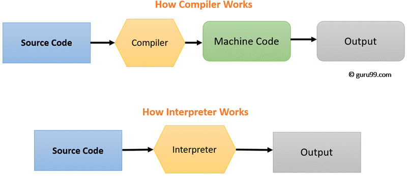

Chapter 5
Programming languages
Levels of Programming Language
- Microcode ( Hardware )
- Machine code
- Assembly Language
- Low-level Programming Language
- High-level Programming Language
Levels of Programming Language
Microcode
- Machine-specific code that directs the individual components of a CPU’s data-path to perform small-scale operations.
- Data-path: the ALU, its inputs and outputs.
- Every machine code instruction tells the CPU to execute a certain microprogram, written in micro-code
- People who build computers program in micro-code. The programs that you write are converted into machine code.
Machine code
- Machine code is a computer program written in machine language. It uses the instruction set of a particular computer architecture. It is usually written in binary. Machine code is the lowest level of software. Other programming languages are translated into machine code so the computer can execute them.
- Machine code instructions still depend on the computer’s architecture, but the variation isn’t as great; many CPUs manufactured around the same time or by the same company will use the same machine code sets, in fact.
Assembly language
- An assembly language is a low-level programming language designed for a specific type of processor. It may be produced by compiling source code from a high-level programming language (such as C/C++) but can also be written from scratch.
- Assembly code is converted into executable machine code by a utility program referred to as an assembler
- First appeared 1949
Instructions of assembler( x86 )
- MOV - move data from one location to another
- ADD - add two values
- SUB - subtract a value from another value
- PUSH - push data onto a stack
- POP - pop data from a stack
"Hello, World" in x86 Assembly Language
Low-level Programming Language
A low-level programming language is a programming language that provides little or no abstraction from a computer's instruction set architecture—commands or functions in the language map that are structurally similar to processor's instructions. Generally, this refers to either machine code or assembly language. Because of the low (hence the word) abstraction between the language and machine language, low-level languages are sometimes described as being "close to the hardware". Programs written in low-level languages tend to be relatively non-portable, due to being optimized for a certain type of system architecture.
High-level Programming Language
High-level programming language is a programming language with strong abstraction from the details of the computer. In contrast to low-level programming languages, it may use natural language elements, be easier to use, or may automate (or even hide entirely) significant areas of computing systems (e.g. memory management), making the process of developing a program simpler and more understandable than when using a lower-level language. The amount of abstraction provided defines how "high-level" a programming language is
High-level vs Low-level

Categories of Programing Languages
Implementation Methods
- Compilation (Ahead-of-time ( AOT ) )
- Interpretation
- Hybrid Implementation ( Just-in-time ( JIT ) compilation )
Compilation
Compilation is the process the computer takes to convert a high-level programming language into a machine language that the computer can understand. The software which performs this conversion is called a compiler.
- Compile once, run target many times.
- Compiler will convert the code into machine code (create an exe) before program run.
- Compiler can optimize the speed of the target, even if the optimization itself takes a long time.
Compiled programming languages
- C, C++, Rust, ALGOL
- Go, Haskell, Lisp, Pascal
- COBOL, Fortran, D, Forth
- JOVIAL, Mercury, F#
Interpretation
An interpreter is a computer program, which coverts each high-level program statement into the machine code. This includes source code, pre-compiled code, and scripts. Interpreters convert code into machine code when the program is run.
Interpreted programming languages
- PHP
- Ruby
- Perl
- Python
- BASIC
How Compiler and Interpreter Works

KEY DIFFERENCE
- Compiler transforms code written in a high-level programming language into the machine code, at once, before program runs, whereas an Interpreter coverts each high-level program statement, one by one, into the machine code, during program run.
- Compiled code runs faster while interpreted code runs slower.
- Compiler displays all errors after compilation, on the other hand, the Interpreter displays errors of each line one by one.
- Compiler is based on translation linking-loading model, whereas Interpreter is based on Interpretation Method.
- Compiler takes an entire program whereas the Interpreter takes a single line of code.
Just-in-time compilation
Just-In-Time (JIT) compilation (also dynamic translation or run-time compilations) is a way of executing computer code that involves compilation during execution of a program – at run time – rather than before execution. Most often, this consists of source code or more commonly bytecode translation to machine code, which is then executed directly. A system implementing a JIT compiler typically continuously analyses the code being executed and identifies parts of the code where the speedup gained from compilation or recompilation would outweigh the overhead of compiling that code.
Just-in-time compilation
When computers became a million times faster and compilation shrunk down to a few fractions of a second, the balance between compiled and interpreted languages changed. Clever people blurred the boundaries between the two with a technique called JIT (just-in-time compilation). And that paved the way for most of the modern runtimes we use today. The basic idea was this: Since compilers have godly powers of optimization, and seeing as compiled code is so much faster than interpreted code, why not just compile everything? The trick is to compile is just before you run it. That way there’s no problem with compatibility, because your code is compiled on the same computer that’s going to run it.
Just-in-time compilation languages
- Java
- C#
- Perl
- Groovy
- Scala
JavaScript
JavaScript often abbreviated as JS, is a programming language that conforms to the ECMAScript specification. JavaScript is high-level, often just-in-time compiled, and multi-paradigm. It has curly-bracket syntax, dynamic typing, prototype-based object-orientation, and first-class functions.
JavaScript
JavaScript = ECMAScript + DOM + WEB API ( BOM )
- ECMAScript (or ES) is a general-purpose programming language, standardised by Ecma International according to the document ECMA-262.
- DOM - Document Object Model
- BOM - Browser Object Model
ECMAScript
ECMAScript is programming language
- ECMA-262- ECMAScript® language specification
- TC32
TC32 stages
- Finished Proposals
- Active Proposals
- Stage 1 Proposals
- Stage 0 Proposals
- Inactive Proposals
ECMAScript Editions
- ES1 ECMAScript 1 (1997) First edition
- ES2 ECMAScript 2 (1998) Editorial changes
- ES3 ECMAScript 3 (1999) Added regular expressions, try/catch
- ES4 ECMAScript 4 Never released
- ES5 ECMAScript 5 (2009) Added "strict mode", JSON support
- ES6 ECMAScript 2015 Added let and const, default parameter values e.t.c
- Current 11th edition, June 2020
Variables
A variable is a “named storage” for data. We can use variables to store goodies, visitors, and other data.
To create a variable in JavaScript, use the.
- var - is an old-school variable declaration
- let - is a modern variable declaration
- const- is like let, but the value of the variable can’t be changed.
Variables
let message;
message = 'Hello'; // store the string
const BIRTHDAY = '18.04.1982';
const COLOR_RED = "#F00";
let имя = 'имя';
let 我 = 'Name';
var num = 5;
Data types
- Number, BigInt
- String
- Boolean (logical type)
- null
- undefined
- Symbols
- Objects (reference type)
The typeof operator
typeof undefined // "undefined"
typeof 0 // "number"
typeof 10n // "bigint"
typeof true // "boolean"
typeof "foo" // "string"
typeof Symbol("id") // "symbol"
typeof Math // "object" (1)
typeof null // "object" (2)
typeof alert // "function" (3)